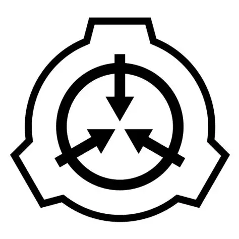

高级研究员 · 心理学研究部 · 项目负责人
Site-19 · Level 3
Alexis Black Aleride，Site-19 心理学研究部高级研究员，项目负责人。负责领导派驻各收容项目的 心理评估团队，协调其访谈安排与结论汇总。日常职责覆盖人员心理评估、异常实体的心理学评估与 访谈、认知危害暴露后的干预，以及记忆完整性复核。其判断以行为序列与叙述结构为准，不采信 自述动机、情绪表达或单次访谈印象；自述材料与行为记录冲突时，一律以行为记录为准。博士训练 完成于 Harvard University，方向为心理学与临床心理学，研究内容涉及模因危害的心理耐受性、 访谈中的叙述一致性分析、认知污染后的记忆完整性评估，以及长期驻站人员的心理稳定性评估体系。 该训练使其在面对不可靠叙述者时倾向于建立可重复的提问序列，而非依赖临场判断。
其签署的评估报告结构固定、内容简省，仅保留编号、结论与必要处置建议，不作扩展性讨论，亦不 附加推测性意见。除常规评估外，负责认知危害暴露人员的周期复查，判断其是否出现延迟性认知偏移。 现阶段主要指派方向为认知危害暴露后的人员复查。因工作性质长期驻站，不参与对外事务，亦极少 出现在需署名的联合文件中。完整履历见 个人履历。
| 编号 | 项目 | 进展 |
|---|---|---|
| REC-01 | 叙述一致性分析。以时间线自洽性、人物指称稳定性与感官细节密度作为三项主指标，建立评估 访谈材料真实性的框架，用于替代此前依赖评估者主观印象的做法。已投入常规使用。 | 在研 |
| REC-02 | 认知危害暴露后的心理耐受性分级。确认耐受性与暴露时长并非简单线性关系，而与个体既往暴露 史显著相关，据此修订了轮次上限。样本编号 ████。 | 周期 |
| REC-03 | 记忆删除后的完整性评估。发现遗忘处理会在目标时间窗的邻近区间造成连带损伤，损伤范围随 剂量递增。该结论已并入施用前的告知流程。 | 结项 |
| REC-04 | 异常实体访谈的标准化流程。将提问顺序、间隔时长与措辞方式固定化，显著降低诱导性提问对 结论的影响。合作方 ████████。 | 在研 |
| REC-05 | 长期驻站人员的心理稳定性周期评估。提出按岗位风险分级设定复查周期，取代原有全员统一 周期的做法，已在高风险岗位试行。 | 在研 |
| REC-06 | 模因载体的认知污染扩散路径观察。确认传播依赖语义理解而非单纯感知，据此调整了载体文件的 流转限制。区域 ████████。 | 结项 |
| REC-07 | 共情反应量表在异常实体接触人员中的适用性修订。原有量表在该人群上区分度不足，已重设 评分项与临界值。 | 在研 |
| 编号 | 项目 | 进度 |
|---|---|---|
| PR-████ | 认知危害暴露后的人员延迟性偏移长期跟踪 | 在研 |
| PR-████ | 访谈标准化流程的跨站点适用性验证 | 在研 |
| PR-████ | 耐受性分级与轮次上限的关联复核 | 在研 |
| PR-████ | 共情反应量表修订版的实测 | 暂停 |
| 编号 | 标题 | 载体 | 年份 | 密级 |
|---|---|---|---|---|
| P-01 | ████████████████████████████████ | ████████ | 2019 | 机密 |
| P-02 | ████████████████████████████████████ | ████████ | 2018 | 机密 |
| P-03 | ██████████████████████████████ | ████████ | 2017 | 机密 |
| P-04 | ██████████████████████████████████ | ████████ | 2016 | 机密 |
| P-05 | ██████████████████████████ | ████████ | 2015 | 机密 |
| 编号 | 条目 | 状态 |
|---|---|---|
| A-01 | 人员心理评估与稳定性复核 | 常驻 |
| A-02 | 异常实体的心理学评估与访谈 | 常驻 |
| A-03 | 认知危害暴露后的干预与复查 | 常驻 |
| A-04 | 记忆完整性评估与遗忘剂施用后复查 | 常驻 |
| A-05 | 供述与证词的叙述一致性分析 | 常驻 |
| A-06 | 所辖项目的评估团队排班与访谈分配 | 常驻 |
| A-07 | 助理研究员指导与评估报告复核 | 常驻 |
| A-08 | 跨项目访谈协调与结论汇总 | 常驻 |
| 编号 | 授权范围 | 等级 |
|---|---|---|
| C-01 | Safe 级实体心理评估 | L3 |
| C-02 | Euclid 级实体心理评估（陪同） | L3 |
| C-03 | 认知危害类实体接触（限防护与轮次上限内） | L3 |
| C-04 | 人员心理档案调阅 | L3 |
| C-05 | 记忆删除施用提议权 | L3 |
| C-06 | Keter 级实体接触 | 拒绝 |
| C-07 | 模因载体无防护接触 | 拒绝 |
| 编号 | 条目 | 认证 |
|---|---|---|
| Q-01 | 临床心理学与结构化访谈 | ████ |
| Q-02 | 认知危害暴露评估 | ████ |
| Q-03 | 记忆完整性测评 | ████ |
| Q-04 | 模因污染识别与处置 | ████ |
| Q-05 | 人员心理稳定性分级 | ████ |
"The mind lies to itself first."
——心智先对自己说谎。